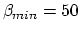

Assume in the circuit below (figure B), , ,
. Find the voltages and when
the base current is
. Sketch the
waveformes (over time) of the two voltages.
Solution:
Find values of and in the circuit with
and so that the Q-point is and .
What is the Q point if ?
Solution:
Find
,
.
Also as
, i.e.,
.
,
,
.
Design a stable self-biasing transistor circuit as shown below
so that the DC operating point (Q point) of and
is in the middle of the load line for maximal dynamic range. Assume
the smallest value allowed is
. To reduce the
number of free parameters, we assume .
Hint:
For the DC operating point to be approximately independent of the
specific transistor used, we want
.
Start the design process from the desired Q-point, determine ,
then find desired and finally and .
Solution:
Find : for the Q-point to be in the middle of the
load line, we set
.
Find and : As
, we have
,
i.e.,
.
Find desired :
Find : To satisfy
, we let
Find and :
Solve these two equations (first divide the first equation by the second),
we obtain the two unknowns and :
Verify your design in previous problem by checking the DC operating
point of the resulting circuit is approximately the same as the requirement.